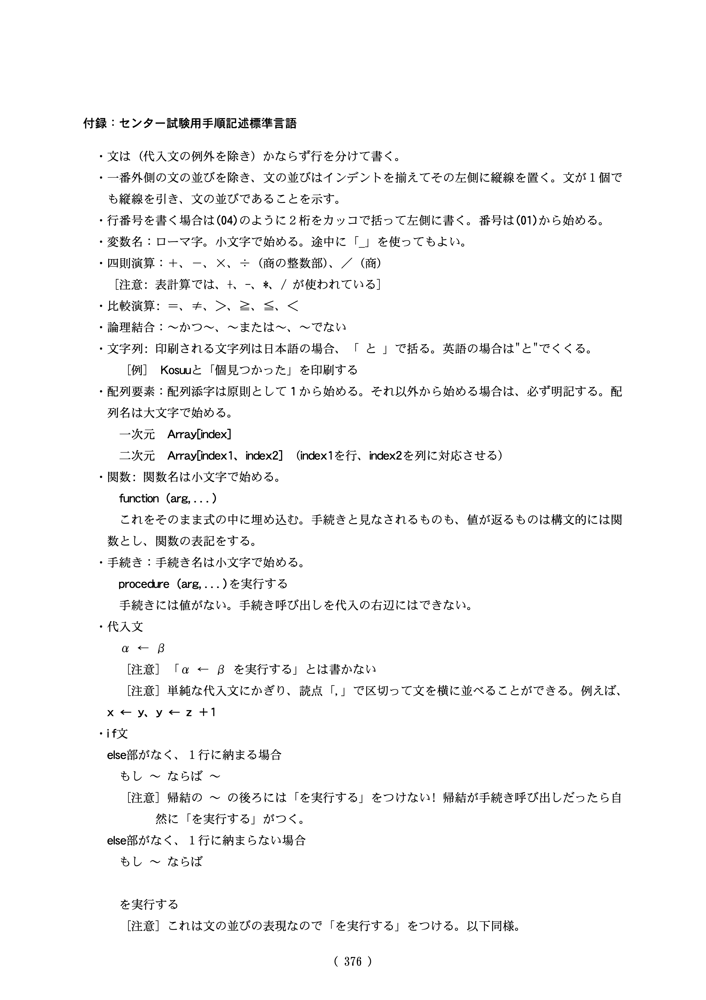
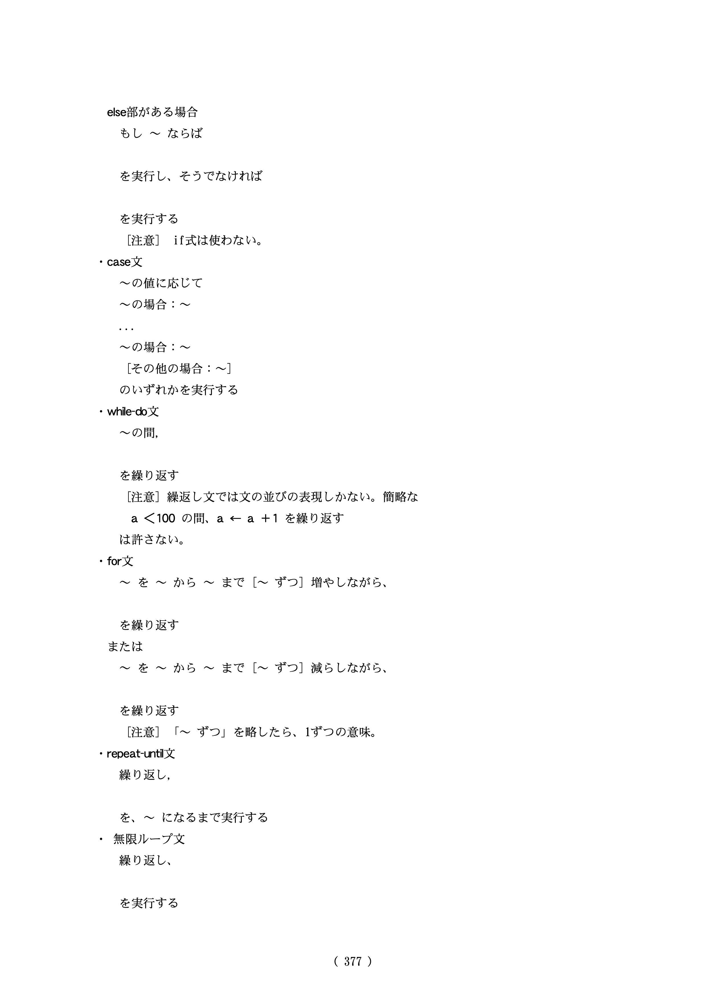

学校で教わらないけど試験に出る擬似コード (Pseudocode)#
-
-
(スキルレベル1) ITパスポート試験 - Wikipedia
(スキルレベル2) 基本情報技術者試験 - Wikipedia
-
DNCL
(1997) BASIC, COBOL, Pascal
(1998-2002) 疑似言語「センター試験用手続記述標準言語」仕様は「読めばそのまま意味が分かる」
(2002-) 疑似言語「DNCL」
(2021-) 疑似言語「DNCL2」
中西 渉, “DNCL2（仮称）の学習環境の実装に関する考察”, 2021
2002年試験問題作成部会の見解#
「既存のプログラミング言語を用いずに、制限された構文を持つ自然言語によって処理手順を記述することにした」
「この言語は読めば分かるので、特に説明の必要はないと思われるが、今後も使われる可能性があるので、参考までに、本報告の最後にその言語仕様を付することにする。」
センター試験用手順記述標準言語の仕様 (2002年度版)#


センター試験用手順記述標準言語の例#
2008年度の例:
(01) Namae[1] ← 「はるこ」，Tokuten[1] ← 73
(02) Namae[2] ← 「なつお」，Tokuten[2] ← 77
(03) Namae[3] ← 「あきよ」，Tokuten[3] ← 81
(04) Namae[4] ← 「ふゆき」，Tokuten[4] ← 68
図2 配列の要素を初期化する手続き
(01) n ← Namae[i]
(02) [エ] ← [オ]
(03) Namae[i+1] ← n
(04) t ← [カ]
(05) [カ] ← Tokuten[i+1]
(06) Tokuten[i+1] ← [キ]
図3 配列の要素を入れ替える手続き
(01) ~ (04) (図2 配列の要素を初期化する手続き)
(05) jを4-1から1まで1ずつ減らしながら，
(06) ｜ iを1から[ク]まで1ずつ増やしながら，
(07) ｜ ｜ もしTokuten[i] < [ケ] ならば
(08) ~ (13) ｜ ｜ ｜ (図3 配列の要素を入れ替える手続き)
(14) ｜ ｜ を実行する
(15) ｜ を繰り返す
(16) を繰り返す
図4 並べ替えの手続き
(01) ~ (04) (図2 配列の要素を初期化する手続き)
(05) j ← [シ] - 1
(06) 繰り返し，
(07) ｜ saigo ← 0
(08) ｜ iを1から[ク]まで1ずつ増やしながら，
(09) ｜ ｜ もしTokuten[i] < [ケ] ならば
(10) ~ (15) ｜ ｜ ｜ (図3 配列の要素を入れ替える手続き)
(16) ｜ ｜ ｜ saigo ← [ス]
(17) ｜ ｜ を実行する
(18) ｜ を繰り返す
(19) ｜ j ← saigo - 1
(20) を，saigo ≤ 1になるまで実行する
図6 比較回数を減らした並べ替えの手続き
ブロック#
「一番外側の分の並びを除き、文の並びはインデントを添えてその左側に縦線を置く。文が１個でも縦線を引き、文のらナビであることを示す。」
代入文#
「単純な代入文に限り、読点「，」で区切って文を横に並べることができる。」
a ← b，c ← d